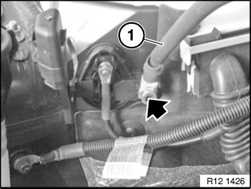
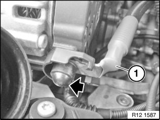
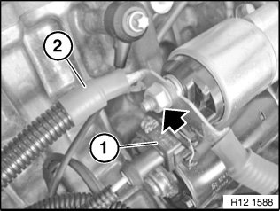
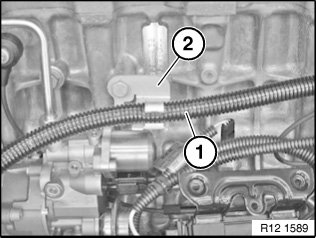
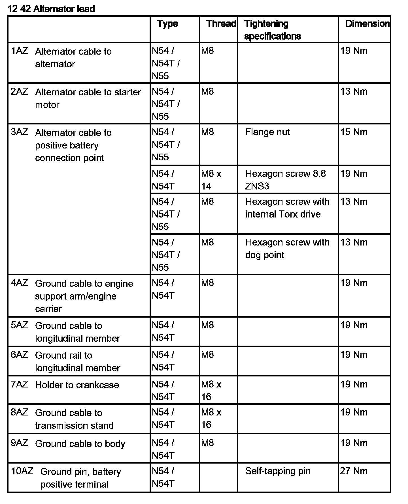
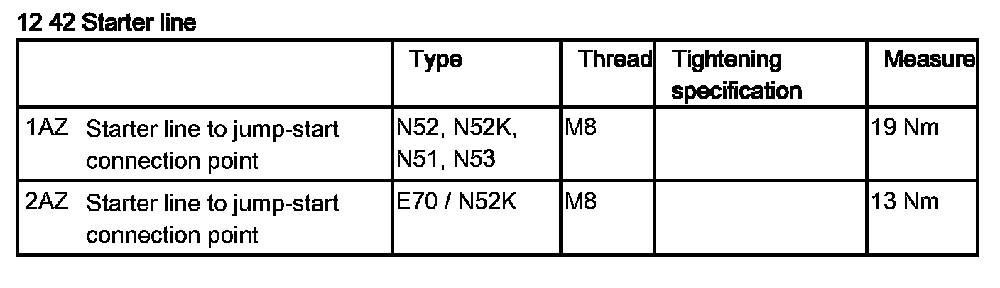

12 42 500 Replacing Battery Positive Lead (Between Starter, Alternator and Battery Positive Terminal)
12 42 500 Replacing Positive Battery Cable (between Starter Motor, Alternator And Positive Battery Connection Point)

Necessary preliminary tasks:
- Read out fault memory of DME control unit.
- Switch off ignition.
- Disconnect battery negative lead.
- Remove intake plenum.

Remove protective cap (not shown).
Release screw, remove positive battery cable (1) from battery positive terminal.
Tightening torque 12 42 3AZ.

Remove protective cap and release nut underneath.
Tightening torque 12 42 1AZ.
Disconnect positive battery cable (1) from alternator.

Unlock connector (1) and remove.
Unfasten nut.
Tightening torque 12 42 2AZ.
Disconnect positive battery cable (2) from starter motor.

Unclip positive battery cable (1) from holder (2) and remove.
NOTE:
Check stored fault messages.
Delete fault memory.

